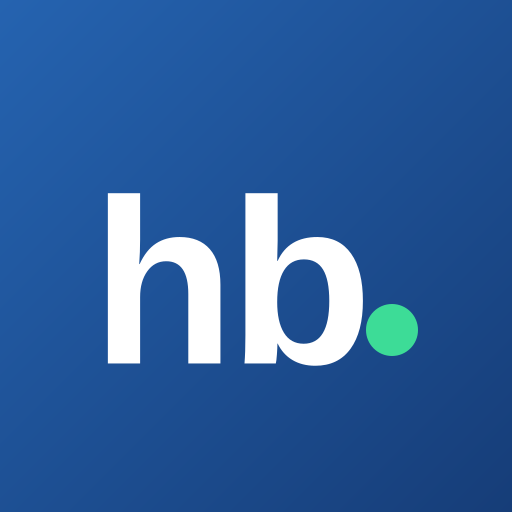

오늘의 인사이트
✍️ 자소서 글자수 세기
🔒 입력한 글은 이 브라우저 안에서만 처리되며, 어디에도 저장·전송되지 않습니다.

회법몬은 수습공인회계사·회계법인 입사 준비자를 위해 한국공인회계사회(한공회)와 빅4 회계법인(삼일PwC·삼정KPMG·딜로이트안진·EY한영)·로컬 회계법인의 채용공고와 회계·세무·딜 업계 뉴스, 빅펌 발간물을 한곳에 자동으로 모아주는 페이지입니다.🕑 상단의 ‘최근 서치’는 마지막으로 공고·기사를 수집·점검한 시각이에요. 별도 새로고침 없이 자동으로 계속 갱신됩니다.
1. 누구를 위한 곳인가요?
- 수습처(회계법인·공기업·일반기업 등)를 찾는 수습·신입 공인회계사
- 빅4·로컬 회계법인 입사를 준비하는 분
- 빅4의 다양한 인턴(단기·정규전환형 등)을 노리는 분
- 회계·세무·딜 업계 동향을 빠르게 훑고 싶은 분
2. 무엇을 모아오나요?
한국공인회계사회와 빅4(삼일·삼정·안진·한영) 채용 사이트에서 수습·신입 공인회계사와 빅4의 다양한 인턴(단기·정규전환형 등) 공고를 위주로 모읍니다. 경력직만 대상으로 하는 공고는 제외하고, 신입·경력을 함께 뽑는 공고는 포함합니다. 회계법인뿐 아니라 한공회 구인란의 공기업·일반기업 등 기타 기관(수습처 포함) 공고도 함께 담아요.
기사·발간물은 원문을 옮겨오지 않고 제목과 링크만 연결합니다 — 자세한 내용은 원문에서 확인해 주세요.
3. 채용알림은 어떻게 받나요?
채용 화면 검색줄의 ‘🔔 채용알림’을 누르고 알림을 켜면, 새 공고가 올라올 때 아래처럼 브라우저 푸시로 알려드립니다. 받을 범위를 고를 수 있어요.

- 전체 — 자격무관 공고를 포함한 모든 새 공고
- 수습CPA 전용 — KICPA 합격자(수습)를 대상으로 하는 공고만
⏱️ 새 공고는 약 30분 주기로 수집되므로, 공고가 실제로 올라온 뒤 알림이 도착하기까지 최대 30분 정도 시차가 있을 수 있어요.
알림 설정은 이 브라우저(기기)에 저장됩니다. 끄려면 검색줄의 ‘🔕 알림 끄기’를 누르거나 브라우저의 사이트 알림 설정에서 해제하면 돼요.
📱 아이폰·아이패드(Safari)는 애플 정책상, 사파리 화면 맨 아래 가운데의 ‘공유’ 버튼(네모에 위 화살표 ⬆️ 모양 / 아이패드는 상단) → ‘홈 화면에 추가’로 회법몬을 설치한 뒤, 추가된 아이콘으로 열어야 알림을 켤 수 있어요. (안드로이드·PC는 바로 가능)
4. 공고 카드는 어떻게 읽나요?

- 좌상단 — 법인 약칭(예: EY=한영) · 채용구분(인턴/정규직/계약직/파트타임) · 자격요건(수습CPA/자격무관)
- 아래 줄 — 게시 월-일 · 기관명 · 마감 D-day (마감 당일 D-0은 빨간 박스로 강조)
- 왼쪽 초록 테두리 — 최근 3일 안에 처음 수집된 새 공고예요. (위 NEW ‘방금 올라온 공고’ 패널은 더 좁은 24시간 기준)
- 카드를 누르면 해당 원문 공고로 바로 이동합니다.
5. 얼마나 자주 갱신되나요?
- 채용공고 — 약 30분마다
- 업계 기사 — 약 3시간마다 (오래된 기사는 일정 기간 뒤 자동으로 빠집니다)
- 빅펌 발간물 — 약 반나절에 한 번
6. ‘NEW(방금 올라온 공고)’·‘빅4 신입 공채 ⭐’ 책갈피는 무엇인가요?
채용 화면 오른쪽(모바일은 상단) 패널은 두 가지 책갈피로 전환됩니다.
- NEW — 최근 24시간 안에 처음 수집된 공고만 최신순으로 보여줍니다.
- 빅4 신입 공채 ⭐ — 삼일·삼정·안진·한영 빅4 신입 회계사 정기채용 일정을 모은 특집이에요. 각 법인 공식 채용 페이지 기준으로 수동 큐레이션하며, 시즌마다 갱신됩니다.
7. 공식 채용 페이지 바로가기
의견 보내기
빠진 곳이나 고쳤으면 하는 점이 있다면 최하단 링크로 자유롭게 알려주세요. 큰 힘이 됩니다.
공개된 채용공고·발간물의 제목과 링크만 모은 비영리 페이지입니다.